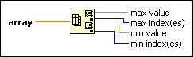

Array Max & Min Function
Owning Palette: Array VIs and Functions
Requires: Base Development System
Returns the maximum and minimum values found in array, along with the indexes for each value.
The connector pane displays the default data types for this polymorphic function.

 Add to the block diagram Add to the block diagram |
 Find on the palette Find on the palette |